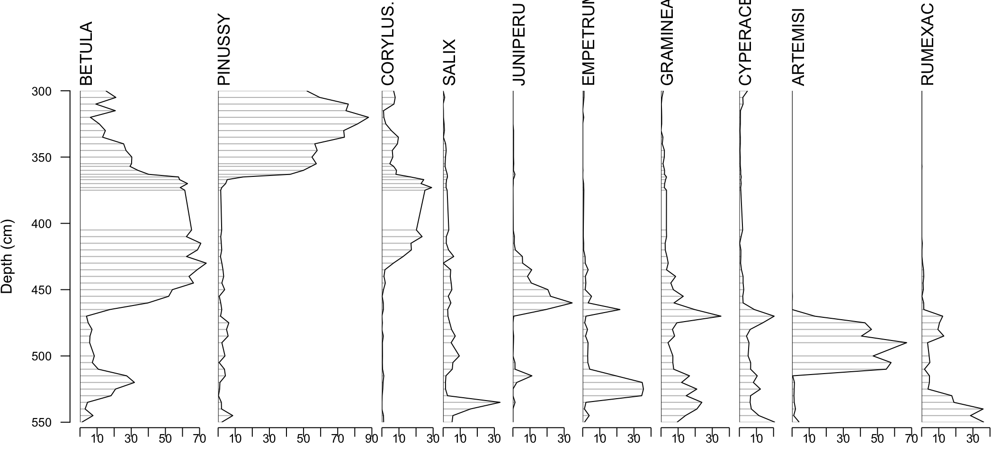
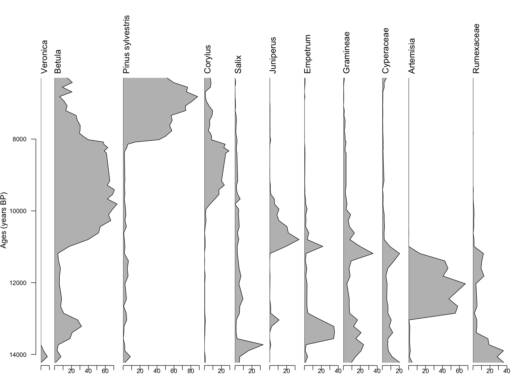
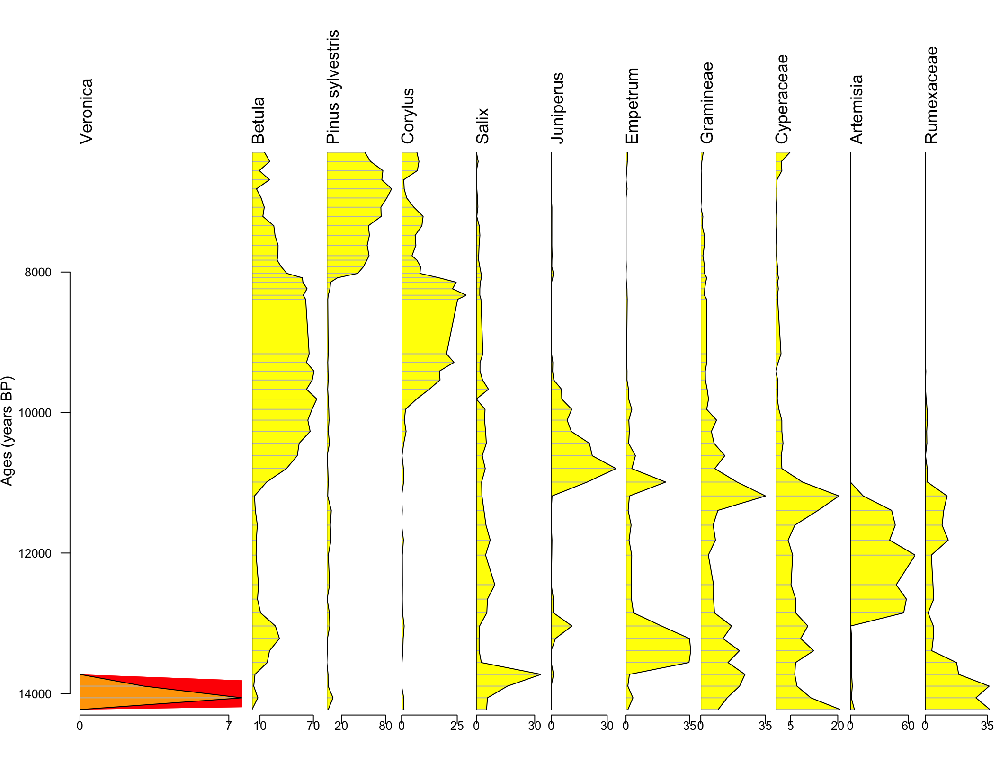
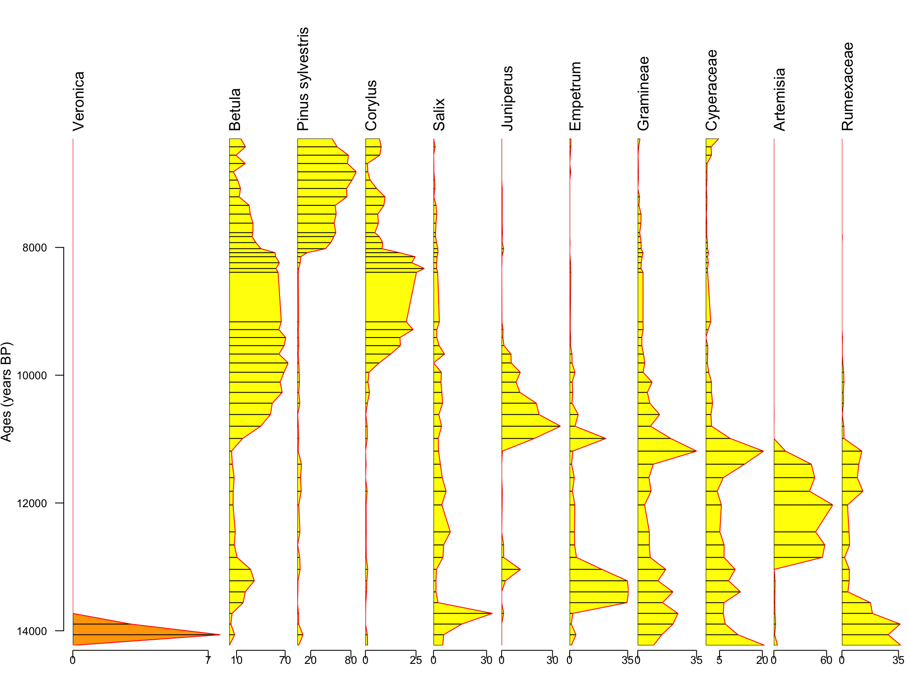
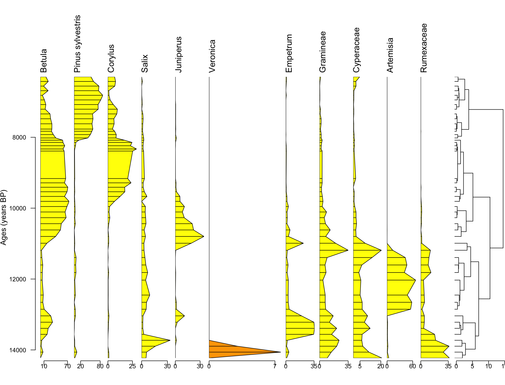

library(rioja)
library(tidyverse) ## for easier data manipulation
data(aber)Stratigraphic Plotting
Overview
Stratigraphic plotting enables visualization of patterns in the fossil archive for a wide range of proxy types analyzed as assemblages (e.g., pollen, diatoms, cladocerans, chironomids, etc.). In order to plot stratigraphic data, all you need are counts of a fossil assemblage, identified to arbitrary taxonomic resolution, with depth. An age-depth model allows for the conversion of depths to ages, thereby enabling comparison across sites and with independent chronologies of climate, but such a model is not strictly necessary for the plotting of stratigraphic data.
In 1980, the Quaternary paleoecologist John Birks wrote that computer-drawn pollen diagrams “are very useful for preliminary arrangement and interpretation of the data …. However, [they] are not sufficiently good for publication, and diagrams for publication must still be drafted by hand.” In the 2020s, all published pollen diagrams are computer-generated. One wonders whether the deliberate process of hand drawing encouraged earlier generations of paleoecologists to think more deeply about the patterns they were representing. But today’s users can rapidly reconfigure their diagrams in an iterative interpretation process and finally create highly customized visualizations using the array of software tools which now exist. In this chapter, we’ll focus on just two: the R package Rioja and the Tilia software.
Plotting with Rioja
In order to plot some pollen data using the R package rioja, we need to call it using the library() function as below. We’ll plot the sample data provided with the package, aber, which are “pollen stratigraphic data from Abernethy Forest, Scotland, spanning approximately 5500 - 12100 BP (from Birks & Mathews 1978).” The aber object is a list with three components:
- spec - the actual pollen spectra, 49 rows of samples named by depth of 36 taxa arranged as columns, formatted as percentages
- ages - a table mapping depths to uncalibrated and calibrated radiocarbon years, and
- names - a table mapping taxa codes in spec to full taxonomic names and ecological group
Let’s take a closer look at spec. One thing we might want to do to ensure data quality is make sure the percentages aren’t obviously wrong. All the pollen percentages for any given row should sum to 100, since each individual pollen percentage is the relative abundance of that taxon at that depth. Let’s see if the data meet this expectation.
rowSums(aber$spec) 300 305 310 315 320 325 330 335 340 345 350
99.42 99.82 100.01 99.54 99.81 99.98 99.98 99.82 99.99 99.47 99.48
355 357 360 363 365 367 370 373 375 405 410
99.68 99.79 99.85 99.78 99.99 99.57 99.83 99.81 99.48 99.48 99.14
415 420 425 430 435 440 445 450 455 460 465
99.46 98.94 98.63 99.46 99.47 98.75 98.62 99.52 99.36 98.48 99.29
470 475 480 485 490 500 505 510 515 520 525
97.60 97.92 96.83 97.08 99.33 97.40 98.20 98.75 99.03 99.64 98.94
530 535 540 545 550
98.55 98.76 100.00 99.02 99.99 It’s not perfect, but they add up more or less to 100 - good! Let’s actually try plotting the data now, using the strat.plot function. The first argument of the function is the pollen spectra to be represented, and we add two additional arguments. Setting scale.percent to true gives a better visualization for percentage data, and setting y.rev to true reverses the y axis, so larger values are below smaller values. This is a standard convention for stratigraphic plots, where age and depth increase as you proceed further down the core.
strat.plot(aber$spec, scale.percent=TRUE, y.rev=TRUE)It looks pretty good! But one criticism we might make is that it’s a little hard to isolate any patterns of ecological change within the complexity. Betula seems to be dominant for a period before being superseded by Pinus sylvestris, but the other pollen taxa are hard to interpret. Many of them are such small percentages compared to Betula and Pinus sylvestris that it’s difficult to see what’s going on with them.
Because those smaller pollen percentages are so difficult to see and are only adding to the clutter at this point, we can choose remove them. This can be done systematically by eliminating all columns with a mean percentage of pollen less than, say, 3%. The following list comprehension achieves that.
aber_streamlined1 = aber$spec[colMeans(aber$spec)>3]
strat.plot(aber_streamlined1, scale.percent=TRUE, y.rev=TRUE)
That looks even better! A clearer story is emerging: we see an early period dominated by herbs and grasses, followed by an intermediate period of birch and hazel, and ending with an era dominated by pine (pine pollen, at least!).
Substituting Age for Depth
But how fast did these events occur? We can’t simply assume that depth is one-to-one with time, because as the vegetation tracked by this sediment core changed, the rate of sedimentation may well have changed too. One can imagine that a prairie landscape suggested at the bottom of the core, perhaps grazed by large herds of animals, would have greater disturbance and sedimentation then a later forest landscape, where tree roots are keeping the soil solidly in place.
Luckily, the aber dataset comes with a chronology that we can use in place of depth for our y axis.
strat.plot(aber_streamlined1,
yvar=aber$ages$`Age (years BP)`,
scale.percent=TRUE,
y.rev=TRUE)Substituting time for depth doesn’t wildly change our understanding of the dynamics at Abernethy. One of the biggest changes is that, actually, that earliest ecological period lasted longer than we might have guessed from the depth profile, suggesting a slower sedimentation rate then. Still, having a chronology is generally preferably to going by bare depth, since it enables comparison to other sites and allows us to disentangle real ecological change from change in sedimentation rate.
Scale Factor
Earlier, we grabbed just the most prevalent taxa at our site. But you may care about a taxon that doesn’t show up as abundantly in the pollen-record – perhaps because it’s insect-pollinated rather than wind-pollinated – but whose presences are meaningful, nonetheless. We can exaggerate the scale factor of these taxa in order to emphasize their importance. Let’s do so with the insect-pollinated taxa, Veronica.
First, we’ll bind the column of Veronica from the original dataframe to our most prevalent taxa. We’ll set plot.poly to TRUE to plot polygons, since we’ll want to change the fill colors, and we’ll also make sure the names are correctly formatted by explicitly renaming the column headings.
aber_exag = aber$spec$VERONICA %>% cbind(aber_streamlined1)
names(aber_exag) = c("Veronica","Betula","Pinus sylvetris",
"Corylus", "Salix", "Juniperus",
"Empetrum","Gramineae","Cyperaceae",
"Artemisia","Rumexaceae")
strat.plot(aber_exag,
yvar=aber$ages$`Age (years BP)`,
scale.percent=TRUE,
y.rev=TRUE,
plot.poly=TRUE)
You can see above the non-exaggerated version of the graph. Because scale.percent is set to TRUE, Veronica appears very small. One option we have is simply to set scale.percent to FALSE, in which case all the columns will have equal width. Another option is to add in a logical vector as the value of the exag parameter, which will add in a shadow wherever exag is TRUE. Let’s show these options below.
strat.plot(aber_exag,
yvar=aber$ages$`Age (years BP)`,
scale.percent=FALSE,
y.rev=TRUE,
plot.poly=TRUE)
strat.plot(aber_exag,
yvar=aber$ages$`Age (years BP)`,
scale.percent=TRUE,
y.rev=TRUE,
plot.poly=TRUE,
exag=c(TRUE,rep(FALSE,10)),
col.exag="red")
A third option is shown below. You can multiply the actual values of the Veronica column by, say, a factor of 10, and then modify the color of the polygons themselves to visually indicate this. If you do this, you’ll want to be very careful to explain to your audience what the values of Veronica really mean. This will include changing the x-axis labels, perhaps in Illustrator to show, what the actual values are. You don’t want to falsify your data!
ver_exag = aber$spec$VERONICA*10
aber_exag2 = ver_exag %>% cbind(aber_streamlined1)
names(aber_exag2) = c("Veronica","Betula","Pinus sylvestris",
"Corylus", "Salix", "Juniperus",
"Empetrum","Gramineae","Cyperaceae",
"Artemisia","Rumexaceae")
strat.plot(aber_exag2,
yvar=aber$ages$`Age (years BP)`,
scale.percent=TRUE,
y.rev=TRUE,
plot.poly=TRUE,
col.poly=c("orange",rep("yellow",10)))
That looks pretty good. And as long as we’re modifying colors, we might as well show some other color changes you can make. You can change the colors of the bars in the plot as well as the overarching line:
strat.plot(aber_exag2,
yvar=aber$ages$`Age (years BP)`,
scale.percent=TRUE,
y.rev=TRUE,
plot.poly=TRUE,
col.poly=c("orange",rep("yellow",10)),
col.line="red",
col.bar="black")
Column Order
You may want to group like taxa together by habit. This can be easily achieved by reordering the columns in the dataframe you’re plotting, as follows.
aber_reordered = aber_exag2[,c("Betula","Pinus sylvestris",
"Corylus","Salix","Juniperus",
"Veronica","Empetrum","Gramineae",
"Cyperaceae","Artemisia","Rumexaceae")]
strat.plot(aber_reordered,
yvar=aber$ages$`Age (years BP)`,
scale.percent=TRUE,
y.rev=TRUE,
plot.poly=TRUE,
col.poly=c(rep("yellow",5),"orange",
rep("yellow",5)),
col.line="black",
col.bar="black")Notice that we had to reconfigure the color vector when we reordered to make sure that Veronica stayed orange even as its position changed.
CONISS
You can also add a CONISS diagram to your stratigraphic plot in R. To do this, first you need to create a dissimilarity matrix from your data, which we’ll do with the R package vegan, and then use that matrix as an input to the rioja function chclust, the output of which can be plugged into the stratigraphic plot. One thing to be very careful of here is not to use the dataframe with the exaggerated values for Veronica when you make your dissimilarity matrix!
library(vegan)
dissim = vegdist(aber_exag)
aber_clust <- chclust(dissim, method = "coniss")
strat.plot(aber_reordered,
yvar=aber$ages$`Age (years BP)`,
scale.percent=TRUE,
y.rev=TRUE,
plot.poly=TRUE,
col.poly=c(rep("yellow",5),"orange",rep("yellow",5)),
col.line="black",
col.bar="black",
clust=aber_clust)
Summary Panel
Rioja doesn’t have great options for making a summary plot of herbs versus trees, but it is possible. I do so below by adding all the herb percentages together (in the non-Veronica-inflated dataframe) and binding it to my plotting dataframe. Then I just make sure the column is named properly, change its color in the plot, and add in a background color to make it easier to see the negative space in that plot. Unfortunately, there’s no simple way to modify the background color of each curve in rioja separately.
aber_exag = aber_exag %>%
dplyr::mutate(all_herbs = Veronica + Empetrum +
Gramineae + Cyperaceae +
Artemisia + Rumexaceae)
aber_reordered = aber_reordered %>% cbind(aber_exag$all_herbs)
names(aber_reordered)[12] = "Herbs versus Trees"
strat.plot(aber_reordered,
yvar=aber$ages$`Age (years BP)`,
scale.percent=TRUE,
y.rev=TRUE,
plot.poly=TRUE,
col.poly=c(rep("yellow",5),"orange",rep("yellow",5),'green'),
col.line="black",
col.bar="black",
col.bg="tan",
clust=aber_clust)Other Changes
We made a pretty sophisticated plot in rioja. To make further aesthetic changes, you might want to export your graphic as a .emf file and manipulate it further in Adobe Illustrator.
Plotting with Tilia
Tilia is a software program developed by Eric Grimm which enables users to upload their data into Neotoma, and also allows users to develop pollen diagrams, using Neotoma data or their own data. You can install Tilia by following the directions on this page.
Formatting data
In order to plot pollen data from a non-Neotoma source in Tilia, there is a preliminary data-formatting step. We want to convert our pollen counts into pollen percentages, which we will plot directly in Tilia. In order to calculate pollen percentages, we need to sum all the pollen counted at each sample depth and then divide each individual count by the count sum at that depth, as shown in the following video.
Pasting data into Tilia
Once the data are properly formatted, they can be pasted into a Tilia spreadsheet. In Tilia, each row corresponds to a taxon, and each column corresponds to a sample depth. Those sample depths can be indexed either as depths, ages, or both. Also, Tilia provides a “Group” column where the habit or ecological group of the taxon in question can be noted.
Modifying Pollen Diagram
Once you’ve made the pollen diagram, there are some convenient ways to modify it in Tilia. These include
- rearranging columns
- deleting columns that you don’t care about, and
- exaggerating the scale of taxa that exhibit small but important changes.
Visualizing Summary Dynamics
Another addition to your plot that Tilia allows for is the creation of a summary panel that shows the broad vegetation dynamics, say, between herbs and trees. The following video shows how to create that summary panel.
Cluster Analysis
Lastly, Tilia makes it easy to insert a stratigraphically constrained cluster analysis (CONISS) into your plot. Watch this video to learn how.
Conclusion
In this module, we’ve walked through how to start building stratigraphic plots (with a focus on pollen data) using the R library Rioja and Eric Grimm’s Tilia. We hope that it has been helpful. Please reach out with any questions.
References
- Birks Quaternary Paleoecology
- Birks, HH & Mathews, RW (1978). Studies in the vegetational history of Scotland V. Late Devensian and early Flandrian macrofossil stratigraphy at Abernethy Forest, Invernessshire. New Phytologist 80, 455-84.